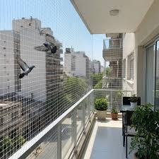
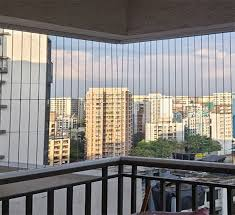

SSDJ Safety Nets provides high-quality safety net installation services in Brigade Road Bangalore for apartments, homes, construction sites, and commercial buildings. Our professional team ensures reliable protection solutions for residents, families, and workers. We offer balcony safety nets, pigeon safety nets, invisible grills, duct area safety nets, and complete safety solutions in Brigade Road and nearby areas. Our safety nets are strong, durable, weather-resistant, and designed for long-lasting protection at affordable prices.

SSDJ Safety Nets offers high-quality building safety nets in Bengaluru for construction sites, apartments, and commercial buildings. Our safety net installation services in Bangalore help prevent accidents, falling debris, and material drops from high-rise structures. These nets are strong, reliable, and designed to ensure maximum safety for workers, residents, and surrounding areas.
SSDJ Safety Nets offers high-quality safety net installation services in Brigade Road Bangalore for construction sites, apartments, and commercial buildings. Our services help prevent accidents, falling debris, and ensure safety for residents, workers, and surrounding areas. Along with building safety nets, we also provide balcony safety nets, pigeon safety nets, invisible grills, and duct area safety nets in Brigade Road and nearby areas. Our safety nets are strong, reliable, weather-resistant, and designed for long-lasting protection at affordable prices.
High-quality building safety nets in Bengaluru made for heavy-duty construction and long-term durability.
Our construction safety nets help protect workers from accidental falls at high-rise building sites in Bangalore.
Prevents debris and materials from falling, ensuring safety for nearby residents and surrounding property.
Expert building safety net installation services in Bengaluru with quick setup and reliable support.
Looking for reliable safety net installation in Brigade Road Bangalore? SSDJ Safety Nets provides professional services for apartments, construction sites, and commercial buildings. We offer balcony safety nets, pigeon safety nets, invisible grills, and complete safety solutions in Brigade Road and nearby areas.
